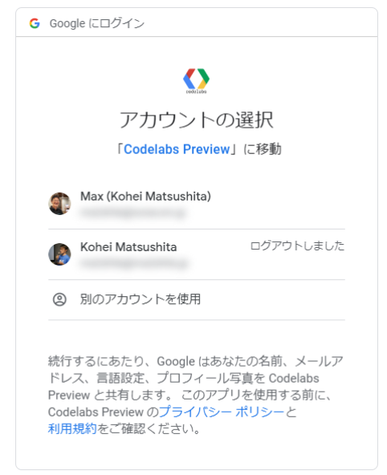
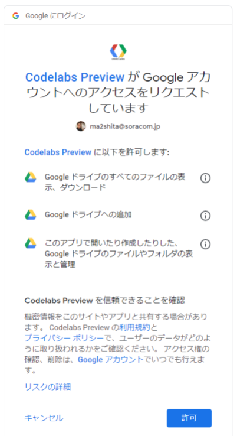
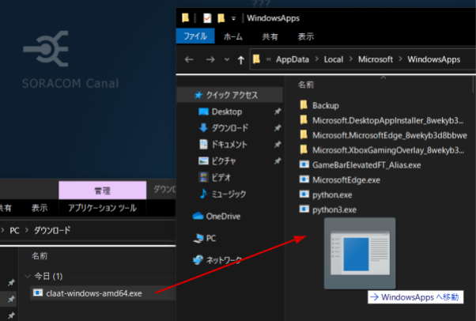
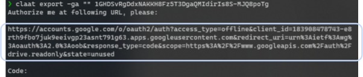
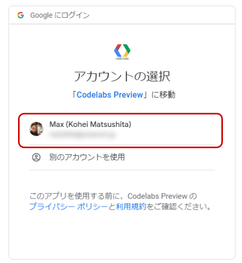
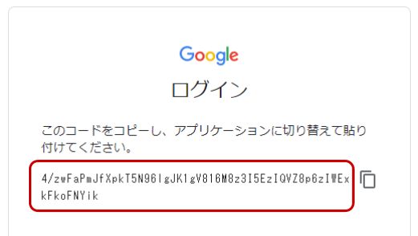
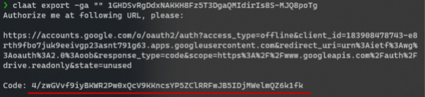
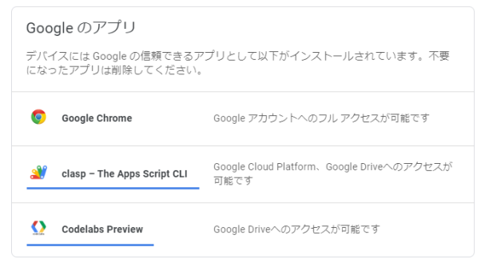
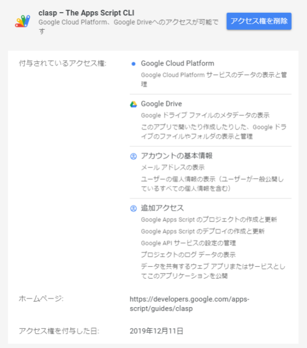
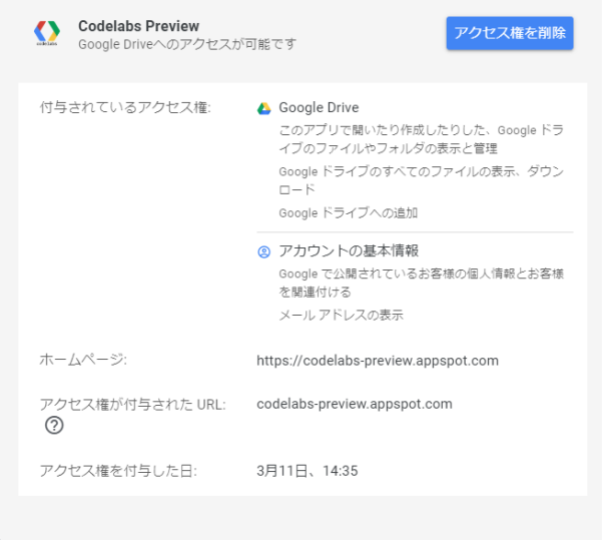

ハンズオンコンテンツ生成・ポータルフレームワーク "CLaaT" を利用した「ハンズオンコンテンツ製作のハンズオン」です。Google Docsで製作したドキュメントからHTMLや画像などのファイル一式を生成し、PC上で確認できるところまでを行います。
できるようになる事
- Google Docsによるソースドキュメントの作成の基礎
claatコマンドによるアセット生成と確認- 作成済みソースドキュメントの修正からアセットの再作成と確認
このハンズオンでサポートしない事 (前提知識)
- Google DocsやGoogle Driveの操作
- ソースドキュメントのメタデータの解説
- 高度なコンテンツ作成フォーマット
- Markdown形式によるソースドキュメントの作成
- CLaaTのポータル機能全般
- 生成されたアセットのアップロード
- Google Analytics連携と分析
- 文章そのものの書き方 (^q^
用語
アセット | HTML、画像、メタ情報格納のJSONといったファイル一式 |
ソースドキュメント | アセットの基となるMarkdownファイルやGoogle Docs |
このコンテンツの進め方
ページの内容を読み、また作業を行ったら右下の［Next］を押して次のステップへ進みます。また、［Back］を使って戻ったり、左のナビゲーションメニューでもページの移動が可能です。
左上の［×］を押してコンテンツを終了することができます。また、ページを開きなおすことで再開できます。ページのアドレスはブラウザの［履歴］メニューを利用してください。
ハンズオンコンテンツを効率よく作成・配信するためのフレームワークです。コンテンツそのものを出力するジェネレータ機能と、コンテンツ群を列挙するポータル機能に分かれており、どちらかだけ利用することも可能です。基となるドキュメントはMarkdownもしくはGoogle Docsが利用できます。また、出力されるコンテンツは静的HTMLと画像群であるため、あらゆるサイトでの配信が可能です。Google社員によるボランティアプロジェクトでApache-2.0ライセンスで公開されています。CLaaT は "Codelabs as a Thing" から来ているそうです。
https://github.com/googlecodelabs/tools
CLaaT(+ Google Docs)の利点
- 生成されるアセットは全て静的コンテンツであるため、どのような場所からでも配信できる。
- ソースドキュメントの作成・編集だけならばブラウザのみで可能(
claatコマンド不要)であることから取り掛かりが容易。図も「図形描画」が利用でき、画像編集ソフトを利用せずともスクリーンショット等の取り込みに加え、マスキングといった編集が可能。また「画像が散らばる」ことが無いため管理も容易。 - ソースドキュメントの権限設定はに影響されることなくアセット生成が可能。また、Google Docsの「コメント」や「提案」は生成の対象外であるため、外部の執筆者や校閲者を呼び込みやすい。
- プリントアウトはソースドキュメント自体が利用できる。
- Google Analyticsを利用した達成度状況や簡易的なアンケート収集が可能で、改善点や効果測定についてデジタルマーケティングの手法が利用できる。
ハンズオンコンテンツ単体の制作から配信までのワークフロー
- Google Docsでソースドキュメント作成・修正
claat exportでアセットを生成claat serveでPC上で確認- OKならばアセットをWebサーバへアップロード ※本ハンズオンの対象外
- 最新版Google Chrome
Preview Codelab Chrome 拡張機能
Preview Codelab Chrome 拡張機能(以下、本拡張機能)Google Docsで書いているソースドキュメントをプレビューすることができる拡張機能です。 https://chrome.google.com/webstore/detail/preview-codelab/lhojjnijnkiglhkggagbapfonpdlinji からインストールしてください。
使い方
Google Chromeでソースドキュメント(Google Docs)を開き、アドレスバー横のをクリックすると、新しいタブが開きプレビューが表示されます。(Google Docs以外のページでは「サイトのデータが読み取れないか、変更できません」と表示され、新しいタブが開きません）
ソースドキュメントを編集後、プレビュー側のタブを再読み込みすると編集内容が即時反映されます。
初回起動時について
本拡張機能は Google Docs を読み込みます。そのためのアクセス権を本拡張機能に渡す必要があり、初回起動時に設定します。
プレビューをしたい Google Docs を読み込めるアカウントを選択してください。

以下のアクセス権を確認したら［許可］をクリックします。

CLaaTコマンド ― Windows 編
https://github.com/googlecodelabs/tools/releases/latest を開きます。
claat-windows-amd64.exe をダウンロードします。
［スタート］を右クリック > ［ファイル名を指定して実行］を開きます。
［名前］に %LOCALAPPDATA%\Microsoft\WindowsApps を入れて［OK］をクリックします。
ダウンロード済みの claat-windows-amd64.exe を開いたウィンドウ(WindowsApps)へ移動します。

移動した claat-windows-amd64.exe のファイル名を claat.exe に変更します。
以上でインストールは終了です。
使い方とアップデート
PowerShell もしくはコマンドプロンプト(cmd.exe)にて claat で実行できるようになります。
アップデートについても同様の作業で、新しいバージョンをダウンロードして上書きしてください。
CLaaTコマンド ― macOS, Linux, WSL(Windows Subsystem for Linux) 編
https://github.com/googlecodelabs/tools/releases/latest を開きます。
claat-darwin-amd64 をダウンロードします。
※ Linux もしくは WSL の場合は claat-linux-amd64 をダウンロードします。以降の手順で読み替えてください。
PATH が通っているところ (例 /usr/local/bin) にコピーしてください。
使い方とアップデート
Terminal.app(bash) にて claat で実行できるようになります。
アップデートについても同様の作業で、新しいバージョンをダウンロードして上書きしてください。
ゼロから作ってもいいですが、早く体験するためにもテンプレートファイルから始めましょう。
テンプレートファイルを開き［ファイル］>［マイドライブに追加］をクリックします。

マイドライブを開き
claat-template-100を右クリックし［コピーを作成］をクリックします。

以下のようにコピーが作成されていれば完了です。

プレビューをしてみる
claat-template-100 のコピーを開き、アドレスバー横のをクリックすると、新たなタブが開きプレビューが表示(以下、プレビュー)されます。
claat-template-100 のコピー を開き、編集やプレビューをしながらコンテンツ作りを学びます。
タイトルをハンズオンテキストに編集してから、プレビューで再読み込みしてみましょう。
文章を編集してプレビューで見てみましょう。
例えば以下は編集ポイントです。
- A には b に → A には a に
- B には a に → B には b に
- 生命、世界、そして万物 → 生命、宇宙、そして万物
これ以降はテキスト内の「やってみよう」に沿って作業を進めてください。
claat コマンドでアセットを生成します。
Google Docs ID を入手します
対象となる Google Docs を開いた時のアドレスバーから入手します。（それ以外の方法が無い！）
上記の例では
https://docs.google.com/document/d/1FXJGzsrTjDkHTtfaOsZkzZeU7ZUZQ7M52hHuKm9Fl8o/edit#
となっているところが ID です。
claat export を実行します
$ claat export -ga "" [Google Docs ID]
となります。上記の例ならば以下の通りです。
$ claat export -ga "" 1FXJGzsrTjDkHTtfaOsZkzZeU7ZUZQ7M52hHuKm9Fl8o正常に実行されると ok claat-template-100 といった表示がされ、同名のディレクトリが作成されています。これは Google Docs 内の冒頭にあるメタ情報テーブルの URL がこのディレクトリになります。この URL を変更することで出力先を制御できます。(= Google Docs のファイル名は利用されません)
初回起動時について
claat コマンドは Google Docs を読み込みます。そのためのアクセス権を claat コマンドに渡す必要があり、初回起動時に設定します。
claat コマンド実行時に表示された URL にアクセスします。(ターミナルから URL をコピーしてブラウザに貼り付けます)

claat でコンテンツ化したい Google Docs が読み込めるアクセス権を持つアカウントを選択します。

表示されたコードをメモします。

ターミナルに戻り、先ほどのコードを Code: に入力します。

出力されたアセットについて
メタテーブルの URL に設定したディレクトリの中に全てのアセットが生成されています。
❯ ls -F claat-template-100/
codelab.json img/ index.htmlclaat serve でローカル確認します
アセットのディレクトリへ移動した後 claat serve を実行すればコンテンツを http://localhost:9090 で確認できます。
❯ cd claat-template-100
❯ claat serve
Serving codelabs on localhost:9090, opening browser tab now...基本的にはプレビューと同様の出力となります。
- ローカルに出力された
claat-template-100ディレクトリの削除 - Google Docs の claat-template-100 のコピー の削除
- (任意) claat コマンドとアクセス権の削除
- (任意) Preview CodeLab 拡張機能とアクセス権の削除
アクセス権の確認と削除方法
Preview CodeLab 拡張機能（以下、拡張機能）と claat コマンドのアクセス権は Google アカウントの設定から確認と削除が可能です。
アカウントにアクセスできるアプリを開き "Google のアプリ" に表示されている "clasp - The Apps Script CLI" が claat コマンドの、"CodeLabs Preview" が機能拡張のアクセス権です。

クリックするとアクセス権の内容確認と共に、ここからアクセス権の削除ができます。それぞれのアクセス権(5/19/2020 時点)を掲載しておきます。


お疲れ様でした。ハンズオンは終了です。
この先で学べることは以下の通りです。
- CLaaT アセットのアップロード (準備中)
- CLaaT Google Analytics 連携ハンズオン
CLaaTの課題と回避策
Polymer アプリで実装されているため、SEO的な観点でのアセットにはなっていない。 | 検索自体には引っかかるようなので、適切なポータルやLPがあれば良さそう。 |
Polymer Projectの勢いが微妙な感じがする。 | 生成後のアセットを直接いじるわけでは無いので、フレームワーク自体の今後を考慮する必要はあまり感じられないから無視できるかと。 |
左上［×］によるバックが消せない。また最後の［Done］の行先が設定できない。 | ［x］はCSSをstorage.google.comではなく独自配信するようにしたうえで独自CSSを追記すれば回避可能だが、アップデート追従に配慮が必要。 ( ［Done］は、、、どうする？［x］同様に消してしまうという回避策も考えられる。 |
| 頑張ってください。 |
Google Docsで指定したフォーマットが全て反映されるわけでは無い。 | 生成時の表現力の限界ではあるが、必要十分であると考えられる。逆に考えると、印刷用スタイルが設定できるという利点もある。 |
Google Docs上で直接図形描画すると解像度が低い画像が生成される。 | 別途「図形描画」を作ってから［描画］>［ドライブから］で取り込むことで回避できる。 コピーは追従せず元の図形描画ファイルへのリンクとなるため、権限もしくはコピー後の差し替えが必要となるので注意。 |
放っておくと |
|
再生成の時に使われなくなった画像が消えない。 |
|
アクセス権に起因する実運用のアイデア
CLaaT の利用を検討する前提は、外部へ広く一般公開するハンズオンコンテンツの製作となります。そのため、ソースドキュメントである Google Docs も見られてしまっても良いように作成すべきです。
一方、claat コマンドや拡張機能へ付与するアクセス権は、Google Drive 内の全てのファイルが読み込めたりと比較的大きいため、気になる組織も存在すると考えられます。
そこで、「CLaaT 専用アカウント」を @gmail.com で作成し、そこで作成していくという方法が考えられます。考えられる要件を箇条書きで提案します。
- CLaaT 作成者は @gmail.com でアカウントを取得 (アカウントを共有するか、それぞれ取得するかはポリシー。共有の場合は MFA の有効化を強く推奨)
- ブラウザで別プロファイルを作成し、同アカウント専用とする